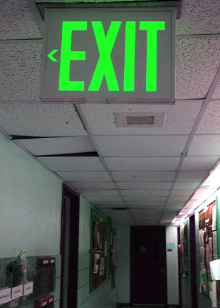

This is my first image. I wanted to make the exit sign green instead of the original red to make it more interesting. The surroundings also ended up turning green too which I tried to change but the whole photo ended up having a green color. I did play around with the brightness, contrast, hue/saturation, and the levels, but everyting ended up becoming pretty dark. Though I did increase the brightness and lowered the saturation a little, it also made the exit sign less green so I decided to leave it as it ended up.
